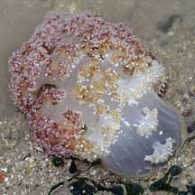
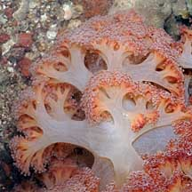
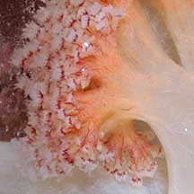
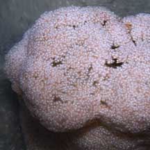
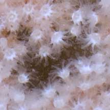
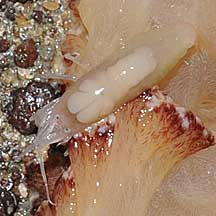
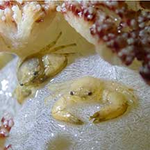

|
|
| soft corals text index | photo index |
| Phylum Cnidaria > Class Anthozoa > Subclass Alcyonaria/Octocorallia > Order Alcyonacea > Family Nephtheidea |
| Ball
flowery soft coral Dendronephthya sp.* Family Nephtheidae updated Nov 2019 Where seen? This spherical soft coral is seen on our Northern shores. On coral rubble. Features: Out of water, the colony spherical about 6-10cm in diameter. When submerged, may appear tubular or cylindrical. The colony has a fat central 'trunk' with many short branches. Polyps only found at these branch tips forming umbrella shaped clusters, which overall forms a spherical shape. Polyps tiny (0.5cm or smaller) with eight white branched tentacle, often surrounded by clusters with tiny spikes. The common tissue white or transparent, with white sclerites (tiny bits of calcium) embedded in the tissues. May be pink or orange near the polyp clusters. Flowery friends: Small animals seen in this soft coral include false cowries, tiny shrimps, white soft coral snapping shrimps, porcelain crabs and tiny colourful brittle stars and large Ghost brittle stars. |
|
 Beting Bronok, Jun 06  Polyps in clusters with spikes. Beting Bronok, Jun 06 |
 Beting Bronok, Jul 08  |
 Beting Bronok, May 11  |
 Tiny white snapping shrimps often found in a pair in this soft coral. Beting Bronok, Jul 08 |


*ID awaits confirmation. Species are difficult to positively identify without close examination.
On this website, they are grouped by external features for convenience of display
| Ball flowery soft corals on Singapore shores |
On wildsingapore
flickr
|
| Other sightings on Singapore shores |
 Porcelain crabs seen in a colony. Pulau Sekudu, Jun 22 Photo shared by Jonathan Tan on facebook. |
|
Links
References
|